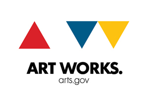
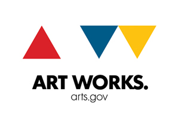

September 8, 2012: NEPO 5K DON'T RUN is back!

Believe it or not, we are doing it again! NEPO 5k DON'T RUN will be hoping, skipping, crawling, jaunting, hobbling, trekking, stumbling, trotting, moonwalking, un-running and no-running back in 2012!
On September 8th 2012 NEPO House is proud to present the second iteration of NEPO 5K DON'T RUN. Curators Klara Glosova, Sierra Stinson and Zack Bent have invited a profusion of Seattle artists to create projects for a nearly 5 kilometer route leading through diverse urban environments. In true NEPO fashion (we like to do things backwards) this year's Don't Run is reversed, shortened and almost entirely downhill! Starting at NEPO House on Beacon Hill and finishing in front of Kobe Terrace Gardens in the International District, participants will encounter city streets populated with artwork, installations and performing artists. Finish-line show, MCed by Jake Stratton, will feature live music by Bavarian Village Band, multimedia show by Airport, DJ Never Leaves, performance by Seattle Butoh Festival, DAIPANbutoh dancers and Roz Band, storefront video installations, LxWxH pop-up store, Interstitial Theatre's Mobile Screen, food trucks and Drink or Don't Drink Garden. Once again, expect the unexpected!
NEPO 5K DON'T RUN is organized by NEPO House. NEPO House is an Associated Program of Shunpike.
This event is made possible by funding from 4Culture and the City of Seattle Office of Arts & Cultural Affairs. This program is also supported, in part, by a grant from the Washington State Arts Commission, and a grant from the National Endowment for the Arts (NEA).
 

ARTISTS // CURATORS // LOCATION and SCHEDULE // PRESS and SPONSORS